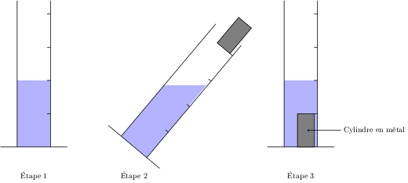

Masse volumique : Relation m = ρ.V influence de la température (phénomène de convection)
Proposer et mettre en œuvre un protocole expérimental pour déterminer une masse volumique d’un liquide ou d’un solide.
Estimer expérimentalement une valeur de solubilité dans l’eau.
Compétences
Masse volumique
Matériau
Masse volumique (g/cm3)
Aluminium
2,7
Fer
7,9
Zinc
7,1
Cuivre
9,0
La masse volumique d'une substance (notée avec la lettre grecque "rhô" ρ) correspond à la masse d'une substance pour une unité de volume.
Mathématiquement, on a la relation suivante :
\[m = \rho \times V,\]
où \(m\) est la masse de la substance (en g), \(V\) est le volume de la substance (en cm3) et ρ est la masse volumique de la substance (en g/cm3).
Mettre 20 mL d'eau dans l'éprouvette graduée
Pencher l'éprouvette et laisser glisser doucement le cylindre dans l'éprouvette
Relever et noter le nouveau volume
Calculer le volume du cylindre
1 L = 1 dm3
1 mL = 1 cm3
1000 L = 1 m3
Complète le schéma suivant en rajoutant un trait rouge au volume indiqué par le liquide à l'étape 3.

Pourquoi faut-il pencher l'éprouvette à l'étape 2 ?
Fais l'expérience et note le volume de chaque cylindre dans les tableaux 1 et 2.
Calcule la masse que devrait avoir les cylindres en utilisant la formule de la masse volumique.
Tableau 1 : volume et masse théorique de cylindres de même volume
Métal
volume du cylindre (cm3)
masse théorique
Aluminium
Cuivre
Zinc
Fer
Mesure et note les masses de chaque cylindre, en conclure le métal lié à chaque cylindre.
Tableau 2 : volume et masse des différents cylindres
Cylindre
Volume (cm3)
Masse (g)
Métal
1
2
3
La est une grandeur physique qui permet de faire le lien entre et .
Chaque a une masse volumique différente, il est donc possible de différencier des matériaux en la mesurant.
Masse volumique, créé par E. Machefer, est sous licence CC BY-NC-SA 4.0